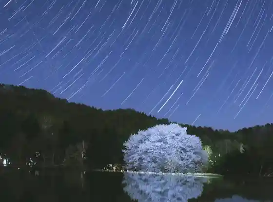
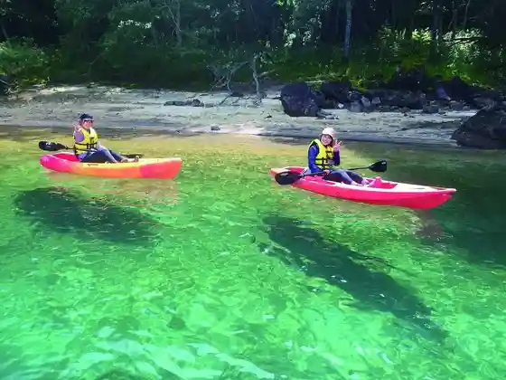
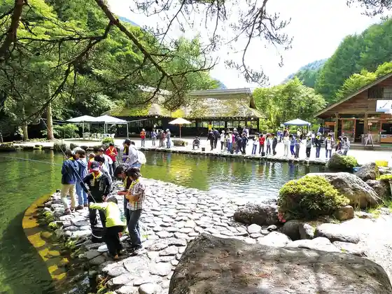

Kinsei Shrine
Katashina, Gunma · 0278-58-2250 · Official / source link
Hariyama no Ten'o Sakura
Katashina, Gunma · 0278-58-3222 · Official / source link

Oze National Park
Katashina, Gunma · 0278-58-3222 · Official / source link
Sugenuma SUP
Katashina, Gunma · 080-7826-0815 · Official / source link

Oku Nikko Famirii Land Shirone Sakana En
Katashina, Gunma · 0278-58-2250 · Official / source link

Marunumakogen Sukii Resort
Katashina, Gunma · 0278-58-2211 · Official / source link
Roadside Station Oze Katashina
Katashina, Gunma · 0278-25-4644 · Official / source link
Ai Kobo Shige Hachi
Katashina, Gunma · 0278-25-3443 · Official / source link
Shobu Sawa Zazenso Gunsei Chi
Katashina, Gunma · 0278-58-3222 · Official / source link
Oshimizu Mizu Basho Gunsei Chi
Katashina, Gunma · 0278-58-2112 · Official / source link
Katashina Mizu Basho Forest
Katashina, Gunma · 0278-58-3222 · Official / source link
Nikko Shirone Yama Ropue Sancho Ekishuhen
Katashina, Gunma · 0278-58-2211 · Official / source link
Buson Ranch
Katashina, Gunma · 0278-58-3757 · Official / source link
Sugenuma
Katashina, Gunma · 0278-58-2112 · Official / source link
Kinsei Toge
Katashina, Gunma · 0278-58-3222 · Official / source link